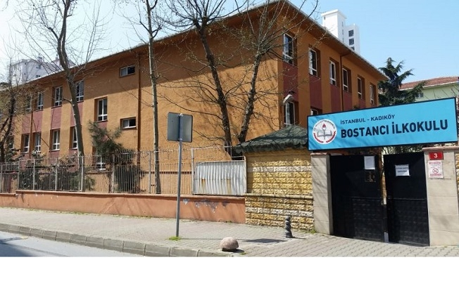

Bostancı İlköğretim Okulu
Öğrenim hayatıma başladığım ilk yer Bostancı İlköğretim Okuluydu. Bu okul evimin olduğu muhitte, sahile çok yakın bir okuldu. Müziğe olan sevgim buradaki müzik öğretmenim sayesinde başlamıştı. Okulum bana çok güzel anılar bıraktı. 2 sene önceye kadar okuluma gidip ziyaret ederdim ancak yıkılıp tekrar inşa edilmeye başlandığından beri hiç uğrayamadım.
Benim öğrencisi olduğum zamanlardan kalan bir fotoğraf:
